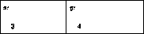
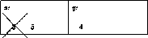

Encapsulating and managing state variables is similar to forming and
managing structures. When we first apply a function that abstracts over
state variables we provide initial values for some of the variables. The
service manager serves the (current) value of these variables, which is
similar to extracting the values of fields in structures. Not surprisingly
then, the technique can simulate the constructors
and selectors
of a
define-struct definition. This simulation naturally suggests the
introduction of functions that modify the value in a structure's field. The
following subsections spell out the details behind this idea; the last
subsection generalizes it to vectors.
Take a look at figure 116. The left-hand
side is the one-line definition of a posn structure. The
right-hand side is a functional definition that provides almost all the
same services. In particular, the definition provides a
constructor
that consumes two values and constructs a compound value, and two selectors for
extracting the values that went into the construction of a compound value.
To understand why f-make-posn is a constructor and why
f-posn-x and f-posn-y are selectors, we can discuss how they
work, and we can confirm that they validate the expected equations. Here we do
both, because the definitions are unusual.
The definition of f-make-posn encapsulates two variable definitions
and one function definition. The two variables stand for the arguments of
f-make-posn and the function is a service manager; it produces the
value of x when given 'x and the value of y when
given 'y. In the preceding section, we might have written something
like
(define a-posn (f-make-posn 3 4)) (+ (a-posn 'x) (a-posn 'y))
to define and to compute with f-make-posn. Since selecting values
is such a frequent operation, figure 116 introduces
the functions f-posn-x and f-posn-y, which perform these
computations.
When we first introduced structures rigorously in intermezzo 1, we said
that the selectors
and constructors
can be described with equations. For a
definition such as that for posn, the two relevant equations are:
(posn-x (make-posn V-1 V-2)) = V-1 and (posn-y (make-posn V-1 V-2)) = V-2
where V-1 and V-2 are arbitrary values.
To confirm that f-posn-x and f-make-posn are in the same
relationship as posn-x and make-posn, we can validate that
they satisfy the first equation:
(f-posn-x (f-make-posn 3 4)) = (f-posn-x (local ((define x 3) (define y 4) (define (service-manager msg) (cond [(symbol=? msg 'x) x] [(symbol=? msg 'y) y] [else (error 'posn "...")]))) service-manager))
= (f-posn-x service-manager) ;; add to top-level definitions: (define x 3) (define y 4) (define (service-manager msg) (cond [(symbol=? msg 'x) x] [(symbol=? msg 'y) y] [else (error 'posn "...")]))
= (service-manager 'x) = (cond [(symbol=? 'x 'x) x] [(symbol=? 'x 'y) y] [else (error 'posn "...")]) = x = 3
It is an exercise to show that f-posn-y and f-make-posn
satisfy the analogous equation.
Exercise 40.1.1.
Which function does the simulation of structures not provide? Why
not?  Solution
Solution
Exercise 40.1.2.
Here is yet another implementation of posn structures:
(define (ff-make-posn x y) (lambda (select) (select x y))) (define (ff-posn-x a-ff-posn) (a-ff-posn (lambda (x y) x))) (define (ff-posn-y a-ff-posn) (a-ff-posn (lambda (x y) y)))
Evaluate (ff-posn-x (ff-make-posn V-1 V2)) in this context. What
does the calculation demonstrate?  Solution
Solution
Exercise 40.1.3. Show how to implement the following structure definitions as functions:
(define-struct movie (title producer))
(define-struct boyfriend (name hair eyes phone))
(define-struct cheerleader (name number))
(define-struct CD (artist title price))
(define-struct sweater (material size producer))
Pick one and demonstrate that the expected laws
hold.  Solution
Solution
|
Together, sections 39 and 40.1 suggest that structures are mutable. That is, we should be able to change the values of some field in a structure. After all, we introduced the service managers in section 39 to hide state variables, not just ordinary variable definitions.
Figure 117 shows how a small change to the
definitions of figure 116 turns the locally
hidden variables into state variables. The modified service manager offers
two services per state variable: one for looking up the current value and
one for changing it.
Consider the following definition and expression:
(define a-posn (fm-make-posn 3 4)) (begin (fm-set-posn-x! a-posn 5) (+ (posn-x a-posn) 8))
Evaluating them by hand shows how structures change. Here is the first step:
... = (define x-for-a-posn 3) (define y-for-a-posn 4) (define (service-manager-for-a-posn msg) (cond [(symbol=? msg 'x) x-for-a-posn] [(symbol=? msg 'y) y-for-a-posn] [(symbol=? msg 'set-x) (lambda (x-new) (set! x-for-a-posn x-new))] [(symbol=? msg 'set-y) (lambda (y-new) (set! y-for-a-posn y-new))] [else (error 'posn "...")])) (define a-posn service-manager-for-a-posn) (begin (fm-set-posn-x! a-posn 5) (+ (posn-x a-posn) 8))
It renames and lifts the local definitions from inside of
fm-make-posn. Because the function definition doesn't change for
the rest of the evaluation, we focus on just the variable definitions:
(define x-for-a-posn 3) (define y-for-a-posn 4) (begin (fm-set-posn-x! a-posn 5) (+ (posn-x a-posn) 8)) = (define x-for-a-posn 3) (define y-for-a-posn 4) (begin (fm-set-posn-x! service-manager-for-a-posn 5) (+ (posn-x a-posn) 8)) = (define x-for-a-posn 3) (define y-for-a-posn 4) (begin ((service-manager-for-a-posn 'set-x) 5) (+ (posn-x a-posn) 8)) = (define x-for-a-posn 3) (define y-for-a-posn 4) (begin (set! x-for-a-posn 5) (+ (posn-x a-posn) 8)) = (define x-for-a-posn 5) (define y-for-a-posn 4) (+ (posn-x a-posn) 8)
At this point, the definition of x-for-a-posn has been modified in
the expected manner. From now on every reference to this state variable,
which represents the (simulated) x field a-posn, stands
for 5. Every further reference to x-for-a-posn produces
5.
Exercise 40.2.1. Develop a functional representation for the following structure definition:
(define-struct boyfriend (name hair eyes phone))
such that the fields of the simulated structure can be changed.  Solution
Solution
Exercise 40.2.2.
Here is a modification of the function-based implementation of
posn structures in exercise 40.1.2:
(define (ffm-make-posn x0 y0) (local ((define x x0) (define (set-x new-x) (set! x new-x)) (define y y0) (define (set-y new-y) (set! y new-y))) (lambda (select) (select x y set-x set-y)))) (define (ffm-posn-x a-ffm-posn) (a-ffm-posn (lambda (x y sx sy) x))) (define (ffm-posn-y a-ffm-posn) (a-ffm-posn (lambda (x y sx sy) y))) (define (ffm-set-posn-x! a-ffm-posn new-value) (a-ffm-posn (lambda (x y sx sy) (sx new-value)))) (define (ffm-set-posn-y! a-ffm-posn new-value) (a-ffm-posn (lambda (x y sx sy) (sy new-value))))
Demonstrate how to modify a structure like (ffm-make-posn 3 4) so
that its y field contains 5.  Solution
Solution
Scheme structures are mutable. In Advanced Student Scheme, a structure definition such as
(define-struct posn (x y))
introduces six primitives, not just four:
make-posn, the constructor;
posn-x and posn-y, the selectors;
posn?, the predicate; and
The mutators are operations that change the contents of a structure.
Recall that we think of a structure as a box with compartments. For example, the structure
(make-posn 3 4)
should be visualized as a box with two compartments:
|  |
(define p (make-posn 3 4)) (set-posn-x! p 5)
as a box with the old x value deleted and a new one inserted into
the same box:
|  |
Consider the following definitions:
(define-struct star (name instrument)) (define p (make-star 'PhilCollins 'drums))
Let's consider the effect and computation of the following expression:
(begin (set-star-instrument! p 'vocals) (list (star-instrument p)))
According to our explanation, the first subexpression modifies the
instrument field of the star structure named p;
the second one produces a list of one item, the current value the
instrument field in the structure named p. By analogy to
section 40.2, the evaluation proceeds as follows:
(define-struct star (name instrument)) (define p (make-star 'PhilCollins 'drums)) (begin (set-star-instrument! p 'vocals) (list (star-instrument p))) = (define-struct star (name instrument)) (define p (make-star 'PhilCollins 'vocals)) (begin (void) (list (star-instrument p))) = (define-struct star (name instrument)) (define p (make-star 'PhilCollins 'vocals)) (list 'vocals)
The first step changes one part of the value in the definition of
p, but not the entire value. The second one extracts the current
value of the instrument field and places it in a list.
The introduction of mutators for structures requires two changes to our system of evaluation rules:
Every constructor expression adds a definition with a new, unique name to the top level, unless it already occurs in a definition.75
A name that stands for a structure is a value.
We can understand these changes if we think of each structure as a function
that manages services such as looking up the current value of a field and
modifying the field. After all, local function definitions also
create top-level definitions with unique names. And the names of functions
are values, too.
Using these two new rules we can study the unusual behavior of mutators in more depth. Here is a first example:
(define-struct star (name instrument)) (define p (make-star 'PhilCollins 'drums)) (define q p) (begin (set-star-instrument! p 'vocals) (list (star-instrument q)))
It differs from the first in two ways. First, it defines q to be
p. Second, the second subexpression of the
begin-expression refers to q, not p. Let's
check our understanding of the evaluation process:
(define-struct star (name instrument)) (define p (make-star 'PhilCollins 'drums)) (define q p) (begin (set-star-instrument! p 'vocals) (list (star-instrument q))) = (define-struct star (name instrument)) (define p (make-star 'PhilCollins 'vocals)) (define q p) (begin (void) (list (star-instrument q)))
As before, the first step changes one part of the definition of
p. The second step is to look up q's current value:
... = (define-struct star (name instrument)) (define p (make-star 'PhilCollins 'vocals)) (define q p) (list (star-instrument p)) = (define-struct star (name instrument)) (define p (make-star 'PhilCollins 'vocals)) (define q p) (list 'vocals)
Because q is p and the current value of the
instrument field of p instrument is 'vocals, the
result is again (list 'vocals).
What we have just seen is the effect of SHARING (the effects of mutators), which means that a modification of a struture affects the program in more than one place. Sharing is also visible inside lists as our second example shows:
(define-struct star (name instrument)) (define q (list (make-star 'PhilCollins 'drums))) (begin (set-star-instrument! (first q) 'vocals) (list (star-instrument (first q))))
Here, the right-hand side of the definition of q is an
expression whose only subexpression isn't a value. More
precisely, it is a structure expression that must be evaluated:
... = (define-struct star (name instrument)) (define p (make-star 'PhilCollins 'drums)) (define q (list p)) (begin (set-star-instrument! (first q) 'vocals) (list (star-instrument (first q)))) = (define-struct star (name instrument)) (define p (make-star 'PhilCollins 'drums)) (define q (list p)) (begin (set-star-instrument! p 'vocals) (list (star-instrument (first q))))
Thus the first step is to introduce a new definition, for which we choose
p as the name. The second step replaces (first q) by
p, because q is a list of one item: p. The rest
proceeds almost as above:
... = (define-struct star (name instrument)) (define p (make-star 'PhilCollins 'vocals)) (define q (list p)) (begin (void) (list (star-instrument (first q)))) = (define-struct star (name instrument)) (define p (make-star 'PhilCollins 'vocals)) (define q (list p)) (list (star-instrument p)) = (define-struct star (name instrument)) (define p (make-star 'PhilCollins 'vocals)) (define q (list p)) (list 'vocals)
Finally, effects can be shared among items in different lists. Take a look at this third variant of our program:
(define-struct star (name instrument)) (define q (list (make-star 'PhilCollins 'drums))) (define r (list (first q) (star-instrument (first q)))) (begin (set-star-instrument! (first q) 'vocals) (list (star-instrument (first r))))
The new definition introduces the variable r, which stands for a
list that contains two items. Let's use our new rules to determine the
values and the effects of this program:
... = (define-struct star (name instrument)) (define p (make-star 'PhilCollins 'drums)) (define q (list p)) (define r (list (first q) (star-instrument (first q)))) (begin (set-star-instrument! (first q) 'vocals) (list (star-instrument (first r)))) = (define-struct star (name instrument)) (define p (make-star 'PhilCollins 'drums)) (define q (list p)) (define r (list p (star-instrument p))) (begin (set-star-instrument! (first q) 'vocals) (list (star-instrument (first r)))) = (define-struct star (name instrument)) (define p (make-star 'PhilCollins 'drums)) (define q (list p)) (define r (list p 'drums)) (begin (set-star-instrument! (first q) 'vocals) (list (star-instrument (first r))))
As above, the first step introduces a definition for the new star
structure. The second and third step create the list named r,
which contains p, the newly created structure, and
'vocals, its current instrument value.
The next step selects the first item from q and modifies its
instrument field:
... = (define-struct star (name instrument)) (define p (make-star 'PhilCollins 'vocals)) (define q (list p)) (define r (list p 'drums)) (begin (void) (list (star-instrument (first r)))) = (define-struct star (name instrument)) (define p (make-star 'PhilCollins 'vocals)) (define q (list p)) (define r (list p 'drums)) (list (star-instrument p)) = (define-struct star (name instrument)) (define p (make-star 'PhilCollins 'vocals)) (define q (list p)) (define r (list p 'drums)) (list 'vocals)
Because r contains p as the first item and because the
instrument field of p is still 'vocals, the result is
(list 'vocals) here, too. But, this program still has some
knowledge of 'drums, the original value of the star
structure.
In summary, mutators give us more power than constructors and selectors. Instead of just creating new structures and revealing their contents, we can now change their contents, while the structures remain the same. Next we must contemplate what this means for the design of programs.
Exercise 40.3.1. Name the mutators that the following structure definitions introduce:
(define-struct movie (title producer))
(define-struct boyfriend (name hair eyes phone))
(define-struct cheerleader (name number))
(define-struct CD (artist title price))
(define-struct sweater (material size producer))  Solution
Solution
Exercise 40.3.2.
Develop the function swap-posn, which consumes a posn
structure and swaps the values in the two fields. Its result is
(void).  Solution
Solution
Exercise 40.3.3.
Develop the function one-more-date, which consumes a
girlfriends structure and increases the contents of the
number-past-dates field by 1. The structure definition is
(define-struct girlfriends (name hair eyes number-past-dates))
The result of one-more-date is (void).  Solution
Solution
Exercise 40.3.4. Evaluate the following program, step by step:
(define-struct cheerleader (name number)) (define A (make-cheerleader 'JoAnn 2)) (define B (make-cheerleader 'Belle 1)) (define C (make-cheerleader 'Krissy 1)) (define all (list A B C)) (list (cheerleader-number (second all)) (begin (set-cheerleader-number! (second all) 17) (cheerleader-number (second all))))
Underline in the last program where definitions differ from the initial
program.
 Solution
Solution
Exercise 40.3.5. Evaluate the following program:
(define-struct CD (artist title price)) (define in-stock (list ((make-CD 'R.E.M "New Adventures in Hi-fi" 0) (make-CD 'France "simple je" 0) (make-CD 'Cranberries "no need to argue" 0)))) (begin (set-CD-price! (first in-stock) 12) (set-CD-price! (second in-stock) 19) (set-CD-price! (third in-stock) 11) (+ (CD-price (first in-stock)) (CD-price (second in-stock)) (CD-price (third in-stock))))
Show every step.  Solution
Solution
Recall from intermezzo 29 that vectors, like structures, are compound values. To extract a value from a structure, programs use selector operations. To extract a value from a vector, programs use natural numbers as indices. Hence functions that process vectors defer to auxiliary functions that process vectors and natural numbers.
Not surprisingly, vectors, like structures, are mutable compound
values.
The only mutator for vectors is vector-set!, a function
that consumes a vector, an index, and a value. Thus, for example, the
following program evaluates to 'blank:
(define X (vector 'a 'b 'c 'd)) (begin (vector-set! X 0 'blank) (vector-set! X 1 'blank) (vector-set! X 2 'blank) (vector-set! X 3 'blank) (vector-ref X 2))
The four vector-set! expressions change X so that all of
its four fields contain 'blank. The last expression extracts the
value of one of the fields.
In general, an evaluation concerning mutable vectors
proceeds just like an
evaluation for mutable structures. In particular, a vector
expression introduces a new definition:
(list (vector 1 2 3)) = (list v) ;; add to top-level definitions: (define v (vector 1 2 3))
The variable name v is new and unique. Similarly, a
vector-set! expression modifies a part of a vector definition:
(set-vector! (vector 1 2 3) 0 'a) = (define v (vector 1 2 3)) (set-vector! v 0 'a) = (define v (vector 'a 2 3)) (void)
Finally, effects to vectors are shared just like effects to structures.
Exercise 40.4.1. Evaluate the following program:
(define X (vector 0 0 0 0)) (define Y X) (begin (vector-set! X 0 2) (vector-set! Y 1 (+ (vector-ref Y 0) (vector-ref Y 1))) (vector-ref Y 1))
Show all steps.  Solution
Solution
Exercise 40.4.2.
Develop the function clear, which consumes a vector with three
slots and sets them to 0.  Solution
Solution
Exercise 40.4.3.
Develop the function swap, which consumes a vector with two
slots and swaps the values in these slots.  Solution
Solution
Exercise 40.4.4. Extend the board representation of exercise 29.3.14 with the function
;;board-flip! : board N N -> boolean;; to negate the board position with indicesi,jona-board(define (board-flip! a-board i j) ...)
Don't forget to develop examples and tests for the function.  Solution
Solution
Structure mutators and set!-expressions are related. Indeed, in section 40.2 we explained the effects of the first with the second. Still, there are also important differences that a programmer must understand. Let's start with the syntax:
(set! <variable> <expression>) | set-<structure-tag>-<field>! |
Next we must consider lexical scope issues (see section 18.2). A set!-expression contains a variable. For the set!-expression to be valid, this variable must be bound. The connection between a set!-expression's variable and its binding occurrence is static and can never be changed.
The scope of a mutator is that of its corresponding define-struct. Thus,
in the following program
(define-struct aaa (xx yy))
(define UNIQUE
(local ((define-struct aaa (xx yy)))
(make-aaa 'my 'world)))
...
the underlined occurrence of define-struct has a limited lexical
scope, and its scope is a hole in the scope of the top-level
define-struct. A result of this scoping is that the mutator for
the top-level define-struct cannot mutate the structure called
UNIQUE. The two mutators are unrelated functions that
coincidentally have the same name; the rules for the evaluation of
local-expression dictate that we rename one consistently.
To highlight the differences in syntax and lexical scope, take a look at the following two, apparently similar programs:
(define the-point (make-posn 3 4)) (set! x 17) | (define the-point (make-posn 3 4)) (set-posn-x! the-point 17) |
x in the set!-expression is
an unbound variable. The program on the right is perfectly legal; it refers
to the field x of a posn structure. The largest difference between set!-expressions and mutators concerns their semantics. Let's study two examples to understand the differences once and for all. The first illustrates how similar looking expressions evaluate in a radically different manner:
(define the-point (make-posn 3 4)) (set! the-point 17) | (define the-point (make-posn 3 4)) (set-posn-x! the-point 17) |
the-point and
an assignment to the-point; the one on the right starts with the
same definition for the-point followed by an application of the
mutator. The evaluation of both affects the variable definition but in
different ways:
(define the-point 17) (void) | (define the-point (make-posn 17 4)) (void) |
the-point now stands for a number; on the right, it
is still a posn structure but with a new value in the
x-field. More generally, a set!-expression changes the value on the
right-hand side of a definition, and the application of a mutator changes
the value of just one field in a structure that occurs on the right-hand
side of a definition. The second example shows how an application of mutator evaluates the arguments, which is not the case for set!-expressions:
(define the-point (make-posn 3 4)) (define an-other (make-posn 12 5)) (set! (cond [(zero? (point-x the-point)) the-point] [else an-other]) 1) | (define the-point (make-posn 3 4)) (define an-other (make-posn 12 5)) (set-posn-x! (cond [(zero? (point-x the-point)) the-point] [else an-other]) 1) |
x-field in an-other to 1.
Finally, mutators are values, which means a function can consume a
mutator and apply it:
;;set-to-2 : S-mutator S-structure -> void;; to change a field insto2viamutator(define (set-to-2 mutator s) (mutator s 2)) (define-struct bbb (zz ww)) (local ((define s (make-posn 3 4)) (define t (make-bbb 'a 'b))) (begin (set-to-2 set-posn-x! s) (set-to-2 set-bbb-ww! t)))
The function set-to-2 consumes a mutator and a structure that the
mutator can modify. The program uses it to change the x-field in a
posn structure and the ww-field in a bbb
structure. In contrast, if we were to apply a function to a set!-expression, it
would receive (void) and nothing else.
Mixing set! and Structure Mutators: When a program uses both set!-expressions and structure mutators, our evaluation rules fail for some cases. Specifically, they don't explain sharing properly. Consider this program fragment:
(define the-point (make-posn 3 4)) (define another-point the-point) (begin (set! the-point 17) (= (posn-x another-point) 3))
According to our rules, the two definitions refer to the same
structure. The second one does so by indirection. The set!-expression changes what
the-point stands for, but it shouldn't affect the second
definition. In particular, the program should produce true.
If we were to use our rules in a naive manner, we would not be able to
validate this point.
A proper explanation of structures must introduce a new definition for
every application of a structure constructor, including those on the
right-hand side of definitions in the original program. We will place the
new definitions at the beginning of the sequence of
definitions. Furthermore, the variable in the new definition must be unique
so that it cannot occur in a set!-expression. We will use variables such as
struct-1, struct-2, and so on, and agree to use them for
this purpose only. These names, and only these names, are values.
Using the minor changes to our rules, we can evaluate the program fragment properly:
(define the-point (make-posn 3 4)) (define another-point the-point) (begin (set! the-point 17) (= (posn-x another-point) 3))
= (define struct-1 (make-posn 3 4)) (define the-point struct-1) ;; evaluate from here: (define another-point the-point) (begin (set! the-point 17) (= (posn-x another-point) 3)) = (define struct-1 (make-posn 3 4)) (define the-point struct-1) (define another-point struct-1) ;; evaluate from here: (begin (set! the-point 17) (= (posn-x another-point) 3))
At this point, the structure is created, and both of the original variables
refer to the new structure. The rest of the evaluation changes the
definition of the-point but not another-point:
... = (define struct-1 (make-posn 3 4)) (define the-point 17) (define another-point struct-1) ;; evaluate from here: (begin (void) (= (posn-x another-point) 3)) = (define struct-1 (make-posn 3 4)) (define the-point 17) (define another-point struct-1) ;; evaluate from here: (= (posn-x another-point) 3) = (define struct-1 (make-posn 3 4)) (define the-point 17) (define another-point struct-1) ;; evaluate from here: (= 3 3)
The final result is true, as expected.
The modified evaluation rules are a bit more cumbersome than the old ones. But they fully explain the difference between the effects of set!-expressions and those of structure mutation, which, for programming in modern languages, is an essential concept.